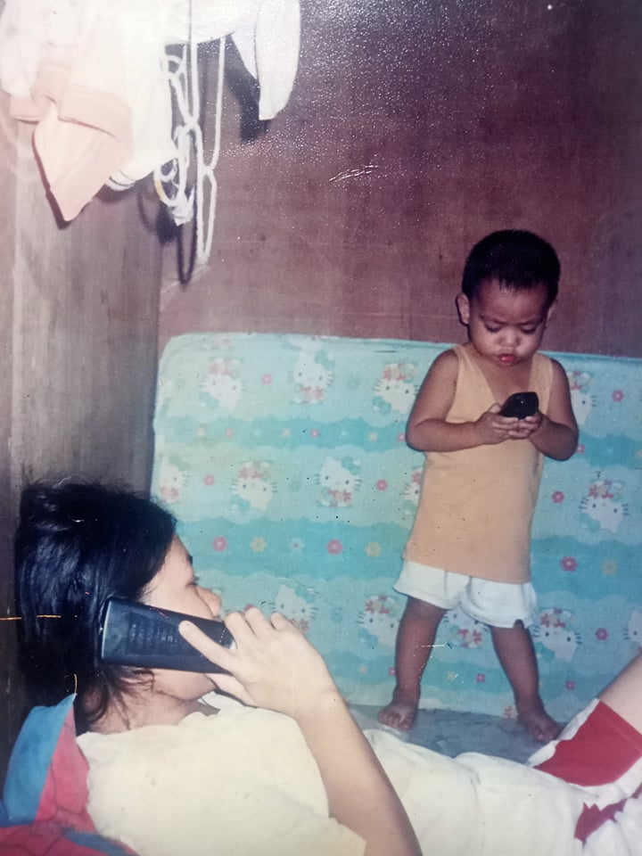
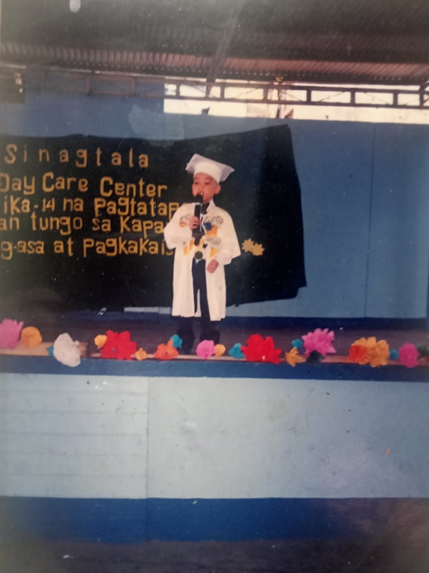

 
Hi! My name is Ervin John S. Morante. Back in my toddler years, I remembered I was just a quiet kid before. I’m always at our house and I rarely go outside of our house to play with other kids. When I was a kid, I love basketball. My godfather always took me with him to go to a private court. My father and my godfather are teaching me how to play basketball. I also always watched them play basketball. I’m very close to that godfather of mine. He was the only godfather I have. I only have 1 godfather and 1 godmother. I’m very close to him and also to my father. We always go outside to play. We are poor and we have no money and my godfather have money. He always treat me and buys me toys. I miss my godfather. My toddler years are the times that we are always go out and see each other because after my toddler years, he and his family moved to other country and decided to live there.